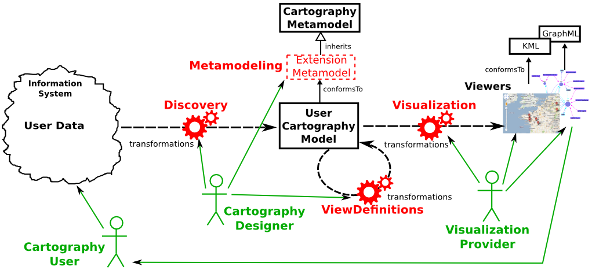

Cartography High Level Tasks
Our proposal to handle Cartography work lays in four higher order tasks (in red
around the user cartography model in figure below) which
can be understood as steps in the data-to-visualization process for a given domain:
- Metamodeling: capture the domain concepts in a DSL which
consists in a metamodel extension inheriting from the cartography metamodel;
- Discovery: inject user data into a central cartography model
which conforms to the domain extension of the cartography metamodel;
- View Definitions: filter the central user cartography model to
get partial and/or computed views of it;
- Visualization: obtain graphical displays of user's data by
running provided visualizations on the central user cartography model or its subsets.
These four high level tasks of the process involve distinct actors (in green in
figure below) that can be classified in three kinds:
- Cartography User: he is the person the whole cartography is
designed for; he provides its data as input of the process and use
the corresponding viewers (to visualize them and take decisions from
that views); he does not need skills in MDE nor in Cartography
- Cartography Designer: he is an engineer with enough skills in
MDE to be able to draw the domain metamodel extension, to
chain and use discovery tools (generating the user central
cartography model) and to write useful view definitions; he could
be an engineer of the user company or an external IT service provider;
- Visualization Provider: it is an external company or organism,
which builds pluggable model transformations and visualization tools
relying on the cartography metamodel; the visualization may be provided as a
component-on-the-shelf.

Metamodeling task
Discovery task
Edition task
Visualization task